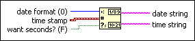

Get Date/Time String Function
Owning Palette: Timing VIs and Functions
Requires: Base Development System
Converts a timestamp value or a numeric value to a date and time string in the time zone configured for the computer. The function interprets timestamp and numeric values as the time-zone-independent number of seconds that have elapsed since 12:00 a.m., Friday, January 1, 1904, Universal Time.

 Add to the block diagram Add to the block diagram |
 Find on the palette Find on the palette |